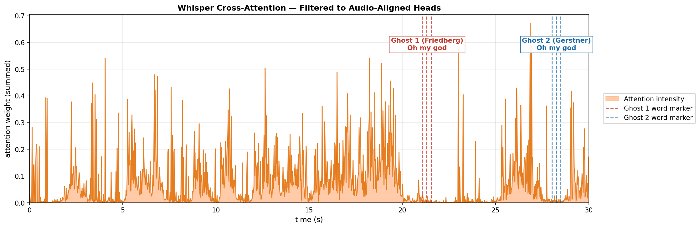

Transcript Reconstruction
Ghost Audio
This page, Chasing Ghosts, is an investigation into why audible speech went untranscribed and to build tooling to detect future instances of this failure mode.
This is a running log more than a final report. Different recordings of the same episode — YouTube vs Libsyn — have different acoustic properties that produce different transcripts. I created an adjacent AI transcription pipeline that gave access to OpenAI's whisper decoder, which revealed by happy accident a potential detection signal for ghost audio across the corpus. This came with a tradeoff: roughly 10x the compute of a standard production pass. Several threads remain open.
Discovery
In early 2026, I moved to Libsyn as the canonical source of truth for All-In Podcast episodes. Libsyn simplified the pipeline: full episodes without the short-form content commingled with All-In Podcast material across their two official YouTube channels. Note: At time of writing (June 2026): 383 Libsyn episodes · 2,230 official All-In Podcast YouTube uploads (of which, I have processed 564).
Libsyn was intended to be a going-forward change, but I ran a handful of episodes through the pipeline — which had been iterated on dozens of times by this point. For Episode 136, I noticed a short utterance from Friedberg around t≈20s: "Oh, my God." It was missing from the new Libsyn transcript and absent from my corpus. But it existed in a late 2025 transcript generated from the YouTube file. It dawned on me that my transcripts were not complete, and that this could be prevalent at scale.
Moments later, guest Brad Gerstner says the exact same phrase. His line is missing from every transcript. I only know he said it because I happened to be watching the video while investigating Friedberg's omission.
Ground Truth
Chamath: "...shortest that's the fattest, and the fattest that's the dumbest."
Friedberg: "Oh, my god."
Friedberg: "He's not even here. You can't do that. It's awful."
Gerstner: "Oh, my god."
Friedberg: "That's just bullying. That's awful."
Ghost Audio Transcript
Chamath: "...shortest that's the fattest, and the fattest that's the dumbest."
Friedberg: "Oh, my god."
Friedberg: "He's not even here. You can't do that. It's awful."
Gerstner: "Oh, my god."
Friedberg: "That's just bullying. That's awful."
I began calling this phenomenon Ghost Audio because Friedberg's speech is clearly audible, yet every attempt to reproduce it in my pipeline seemed to end the same way: extensive investigation, no explanation.
Up to this point, all AI errors I experienced left fingerprints discussed in Heuristics. Omissions like Ghost Audio distort speaker turns, context, and relationships between ideas and leave no detectable fingerprints. Remove enough speech and dialogue collapses. Downstream training examples begin teaching the wrong relationships between prompts and completions.
Why Omissions Matter: Featuring The Dark Knight (2008)
Movie Screenplay
Joker: "There's only minutes left, so you'll have to play my little game if you want to save one of them."
Batman: "Them?"
Joker: "You know, for a while there, I thought you really were Dent. The way you threw yourself after her."
Ghost Audio Transcript
Joker: "There's only minutes left, so you'll have to play my little game if you want to save one of them."
Joker: "You know, for a while there, I thought you really were Dent. The way you threw yourself after her."
YouTube ASR failed to transcribe a single-word response from Batman: "Them?". That response communicates a sudden shift in Batman's understanding: Joker has two hostages, not one.
The transcript still reads cleanly. Nothing appears broken. Yet the moment of realization — and the causal link between Joker's statement and Batman's reaction — disappears.
Acoustic Confirmation
The audio was there. Before opening the decoder, the investigation went through every acoustic tool available — with Claude and ChatGPT's help.
VAD onset and offset thresholds were adjusted to test whether tighter speech detection would surface the ghost. RMS energy confirmed voiced activity in both ghost regions. pYIN pitch detection found traces of Friedberg's voice at ~21s after subtracting Chamath's voice from the signal. The pitch exists. It is not noise.

Libsyn spectral subtraction — pYIN F0 on raw (left) vs residual (right) — t=19–30s. Friedberg's pitch emerges in the ghost region after subtraction. Gerstner's region shows RMS activity but weaker pitch confidence.
I then created an adjacent transcription pipeline using reference whisper and the PyTorch decoder — because the production pipeline uses CTranslate2, which does not expose logits. Cross-attention weights, filtered to audio-aligned heads, showed non-zero attention in both ghost regions — substantially more for Friedberg. The encoder saw the audio. The decoder was attending to it.

Whisper cross-attention filtered to audio-aligned heads. Attention spike at Friedberg's ghost region (~21s). Lower but present activity at Gerstner's (~28s). The decoder was looking at both timestamps. It chose not to emit tokens for either.
That narrowed the problem to one place: the beam search decision.
Decoder Fork
The cross-attention graph shows how poorly attended the ghost speech regions are relative to the surrounding audio. The next question: what probabilities was beam search actually considering?
Beam search, as I learned during this investigation, is a search strategy algorithm. beam=1 — commonly called greedy — takes the highest-probability token at each step and commits fully to that path. beam=5 considers five hypotheses simultaneously and selects the path with the highest joint probability across the full sequence.
Small changes to the decoding strategy could bring the ghost back. Rather than treating Whisper as a black box, I built a separate PyTorch decoder pipeline — PWW — to inspect the token probabilities directly.
The results showed the missing utterance was not impossible. At Friedberg's decision point, after the timestamp anchor <|18.98|>, the decoder had two viable futures. One path matched the audio. The other scored higher.
<|18.98|>The transformer was not choosing between truth and falsehood. It was choosing between two beam paths. The acoustically correct path — "Oh, my god." — lost by 5.75 percentage points. At a 1.16x margin, the result flips depending on which beam search implementation is running. PyTorch recovers the ghost. CTranslate2, which whisperx uses in production, does not.
What makes this stranger: the winning beam wasn't wrong content. "He's not even here." is real — it's what was said next, by the same speaker, several seconds later. The decoder didn't hallucinate. It skipped. It reached past Friedberg's utterance and locked onto Friedberg's own next line, scoring it higher than the thing he said first.
The ghost wasn't replaced by noise. It was replaced by what Friedberg said immediately afterward.
By happy accident, the PWW pipeline manifested text-localized hallucinations in the same regions where Friedberg and Gerstner spoke: "Oh, my god." and "I'm bullying when you're bullying" appearing over VAD-confirmed active speech. This was unexpected. Whisper is most susceptible to hallucinations in regions of silence — but everything up to this point had confirmed these regions are not silent.
The working hypothesis: audio through the encoder is signaling that speech exists, but the decoder cannot transcribe it confidently — so it fills the gap with hallucinated output. Repetitive hallucinations in close proximity, over VAD-positive regions, became the candidate signal.
That observation changed the investigation. If losing beam paths could sometimes represent reality, then failed decoding attempts — the hallucinations — could be signal for ghosts elsewhere in the corpus.
BERD-1
BERD-1 grew out of that fork. Instead of asking one production pipeline for the truth, I ran the same audio through multiple decoder configurations and used disagreement between them as a detection signal.
Some alternate runs produced repetitions. Some recycled nearby phrases into slots where the decoder had no confident decode. Under normal transcript generation those outputs would be discarded. In BERD-1 they became the signal.
The core observation: stable audio produces stable transcripts across decoder configurations. When CTranslate2 beam=5, PWW beam=1, and forced-alignment scores all agree on a segment, that segment is settled. When they don't, the disagreement marks a candidate for review. Three signals drive the system:
20.85–21.50s "Oh, my god." beam=5 has nothing. Its next segment starts at 25.32s. A 4.5-second hole where speech existed.
The three signals converge on the same timestamps. VAD confirmed speech. beam=5 emitted nothing, or emitted words that wav2vec couldn't anchor, or beam=1 filled the slot with a phrase it had already said. Any one is a candidate. All three together is a ghost.
BERD-1 doesn't recover the missing content. It flags the timestamps and puts them in a review queue.
Limitations
BERD-1 is a first-pass detection system, not a finished product. The gap topology signal produces false positives — lexical variants where both beams transcribed the same utterance but represented it differently. beam=1 emitting "seven and eight" and beam=5 emitting "7% and 8%" look like a gap. They aren't. The speech was there, the decoder found it, the surface form just differs. At scale, across 383 episodes, that noise accumulates.
The repeat hallucination signal is cleaner but narrower — it only catches cases where beam=1 had no confident decode and recycled context. Gerstner's ghost, which was simply too quiet for any decoder configuration to surface, produces no repeat signal and no gap. It is invisible to BERD-1 entirely.
The wav2vec alignment signal is the most reliable of the three but also the most dependent on downstream tooling behaving consistently — alignment failures can have causes unrelated to ghost audio.
What BERD-1 produces is a review queue, not a corrected transcript. A human still has to look at every flagged timestamp and decide whether something was missed. At roughly 10x the compute of a standard production pass, it is a forensic tool rather than a pipeline component.
The signals are real. The system works. But it needs continued iteration before it can run reliably at corpus scale without generating more noise than signal.